第 4 回 構文木 (ast) とソースの静的解析¶
所要時間の目安: 3.5 時間 / 前提: 第 1〜3 回
この回のゴール¶
ソースコードを 実行せずに 読む (静的解析) 利点と限界を説明できる。
構文木 (AST) が、どんな 木構造 か説明でき、
astで歩ける。docstring_coverage(docstring が無い公開 API の検出) を、1 行ずつ 読んで説明できる。structure_mapが、import文から 依存を取り出す 仕組み (相対 import の解決を含む) を説明できる。静的解析の 限界 (見つけられないもの) を、具体例で挙げられる。
1. なぜ、コードを「実行せず」に読むのか¶
「このパッケージの公開関数のうち、docstring が無いものを数えたい」。方法は 3 つ考えられます。
方法 |
長所 |
短所 |
|---|---|---|
(a) 正規表現で、 |
手軽 |
文字列の中の |
(b) |
正確 |
コードが実行される (副作用・遅い)。 |
(c) 構文木 ( |
正確で、実行しない |
実行時にしか決まらないもの (動的な処理) は、見えない |
DocsPipeline は (c) を選びました。理由は 2 つです。
安全: 他人のコードを読むだけで、実行しない。副作用 (ファイルの書き込み・ネットワーク) が起きない。
環境に依らない: Houdini の外でも、Sphinx が無い環境でも、動く。
2. 構文木とは¶
Python は、ソースを読むと、まず 構文木 (AST: Abstract Syntax Tree) に変えます。
x = a + 1 は、次のような木になります。

節 (ノード) が、文や式。子 を持つ。
関数定義 (
FunctionDef) の子には、引数・本体の文が並ぶ。文字列の中の
defや、コメントは、木に現れない (だから、正規表現のような誤認が起きない)。
ast.parse で木を作り、歩いてみましょう。次の関数は、木を インデントつきで 表示します
(ctx や演算子の節は省いて、見やすくしています)。
# 実行できる
import ast
def outline(node, depth=0):
skip = (ast.expr_context, ast.operator)
for child in ast.iter_child_nodes(node):
if isinstance(child, skip):
continue
label = type(child).__name__
extra = getattr(child, "name", None) or getattr(child, "id", None) or getattr(child, "arg", None)
if isinstance(child, ast.Constant):
extra = repr(child.value)
print(" " * depth + label + (f" ({extra})" if extra else ""))
outline(child, depth + 1)
source = "def total(items):\n '''合計。'''\n s = 0\n for i in items:\n s += i\n return s\n"
outline(ast.parse(source))
# 出力
FunctionDef (total)
arguments
arg (items)
Expr
Constant ('合計。')
Assign
Name (s)
Constant (0)
For
Name (i)
Name (items)
AugAssign
Name (s)
Name (i)
Return
Name (s)
木の読み方:
最上位は
Module。その子が、ファイルの 文の並び (body)。FunctionDef (total)の子に、引数arguments、そして本体。docstring は、本体の先頭の
Expr(式文) の中のConstant(文字列) です。特別な構文ではなく、「先頭にある文字列の式」。
木を歩く 3 つの方法¶
方法 |
使い方 |
向く場面 |
|---|---|---|
|
全部の節を、順不同で取り出す |
「全ての |
|
直接の子だけ を取り出す |
自分で再帰して、どこで止めるか を決める |
|
節の種類ごとのメソッド ( |
節の種類ごとに、処理を分けたい |
DocsPipeline は、自分で再帰 します (iter_child_nodes)。理由は、「関数の 中 は読まない」「if TYPE_CHECKING: の中は読まない」
のように、降りない場所を決めたい からです。ast.walk は、全部に降りてしまいます。
3. docstring_coverage を読む¶
目的: 公開 API のうち、docstring が無いものを数える。
「公開 API」の定義 (モジュールの先頭の説明から):
_で始まらない名前のモジュール・クラス・関数・メソッド。モジュールに
__all__があるときは、そこに載っている名前だけ。@overloadと、プロパティのsetter/deleterは数えない。
3.1 データ構造¶
第 1 回で読みました (Item = 1 件、Report = 集計)。もう一度、全体の流れを図にします。

3.2 __all__ を静的に読む¶
__all__ = ["a", "b"] は、どの名前を公開するかの宣言です。実行せずに 値を取り出します。
# 引用: docspipeline/docstring_coverage.py::_exported
def _exported(tree: ast.Module) -> set[str] | None:
"""``__all__`` の中身を返す。無い (または静的に読めない) ときは ``None``。
``__all__ = [...]``・``__all__: list[str] = [...]``・``__all__ += [...]`` を読む。
"""
names: set[str] | None = None
for node in tree.body:
if isinstance(node, ast.Assign) and any(isinstance(t, ast.Name) and t.id == "__all__" for t in node.targets):
value_node, replace = node.value, True
elif isinstance(node, ast.AnnAssign) and isinstance(node.target, ast.Name) and node.target.id == "__all__":
if node.value is None:
continue
value_node, replace = node.value, True
elif isinstance(node, ast.AugAssign) and isinstance(node.target, ast.Name) and node.target.id == "__all__":
value_node, replace = node.value, False
else:
continue
try:
value = ast.literal_eval(value_node)
except ValueError:
return None
if not (isinstance(value, list | tuple) and all(isinstance(v, str) for v in value)):
return None
names = set(value) if replace or names is None else names | set(value)
return names
読み方:
tree.bodyを、先頭から順に見る (モジュール直下の文だけ)。3 種類の文を扱う: 代入 (
Assign)、型注釈つき代入 (AnnAssign)、増分代入 (AugAssign、+=)。replaceは、「置き換え」(=) か、「足す」(+=) か。
ast.literal_eval(value_node): 木の節を、安全に Python の値にします (リテラル = 書いてある値だけ)。evalと違い、関数呼び出しなど、実行が必要なものは、ValueErrorになります。値が
["a", "b"]のような 文字列の並び でなければ、None(= 静的に読めない)。 → その場合は、「全部を公開」として扱う (安全側: 数え漏らすより、数え過ぎる)。最後に、集合 (
set) にして返す。
# 実行できる
import ast
from docspipeline.docstring_coverage import _exported
samples = {
"代入": '__all__ = ["a", "b"]',
"型注釈つき": '__all__: list[str] = ["a"]',
"+= で足す": '__all__ = ["a"]\n__all__ += ["b"]',
"動的 (読めない)": "__all__ = [name for name in dir()]",
"無い": "x = 1",
}
for label, source in samples.items():
names = _exported(ast.parse(source))
print(f"{label:14}", None if names is None else sorted(names)) # 集合の順序は不定なので、整列して出す
# 出力
代入 ['a', 'b']
型注釈つき ['a']
+= で足す ['a', 'b']
動的 (読めない) None
無い None
3.3 デコレータの名前¶
@overload や @x.setter は、「docstring を書く場所ではない」ので、数えません。デコレータの 名前だけ を取り出します。
# 引用: docspipeline/docstring_coverage.py::_decorator_names
def _decorator_names(node: ast.FunctionDef | ast.AsyncFunctionDef) -> set[str]:
names = set()
for dec in node.decorator_list:
target = dec.func if isinstance(dec, ast.Call) else dec
if isinstance(target, ast.Attribute):
names.add(target.attr)
elif isinstance(target, ast.Name):
names.add(target.id)
return names
デコレータは、3 つの形があります。
書き方 |
木の形 |
名前の取り出し方 |
|---|---|---|
|
|
|
|
|
|
|
|
|
3.4 1 ファイルを解析する¶
# 引用: docspipeline/docstring_coverage.py::scan_file
def scan_file(path: Path, *, module_name: str | None = None) -> list[Item]:
"""1 ファイルの公開 API を調べる。
Args:
path: Python のソースファイル。
module_name: 結果に使うモジュール名。省略するとファイル名から付ける。
Returns:
見つかった項目。
Raises:
ValueError: ファイルが構文エラーのとき (ファイル名と行を含む)。
"""
try:
tree = ast.parse(path.read_text(encoding="utf-8"), filename=str(path))
except SyntaxError as exc:
raise ValueError(f"{path}:{exc.lineno}: 構文エラー: {exc.msg}") from exc
module = module_name or path.stem
exported = _exported(tree)
items: list[Item] = []
def visit_body(body: list[ast.stmt], prefix: str, top_level: bool) -> None:
for node in body:
if isinstance(node, (ast.If, ast.Try, ast.With)):
# 条件つきの定義 (try: import ... / if sys.version_info ...) も、同じ階層として扱う
visit_body(node.body, prefix, top_level)
visit_body(getattr(node, "orelse", []), prefix, top_level)
for handler in getattr(node, "handlers", []):
visit_body(handler.body, prefix, top_level)
visit_body(getattr(node, "finalbody", []), prefix, top_level)
elif isinstance(node, ast.ClassDef):
if not _is_public(node.name) or (top_level and exported is not None and node.name not in exported):
continue
qual = f"{prefix}.{node.name}"
items.append(Item(path, qual, "class", node.lineno, ast.get_docstring(node) is not None))
visit_body(node.body, qual, top_level=False)
elif isinstance(node, (ast.FunctionDef, ast.AsyncFunctionDef)):
if not _is_public(node.name) or (top_level and exported is not None and node.name not in exported):
continue
decorators = _decorator_names(node)
if decorators & {"overload", "setter", "deleter"}:
continue
kind = "function" if top_level else "method"
qual = f"{prefix}.{node.name}"
items.append(Item(path, qual, kind, node.lineno, ast.get_docstring(node) is not None))
items.append(Item(path, module, "module", 1, ast.get_docstring(tree) is not None))
visit_body(tree.body, module, top_level=True)
return items
細部を読みます。
構文エラーを、場所つきの
ValueErrorに:ast.parseがSyntaxErrorを投げたら、ファイル名:行: 構文エラー: 理由にして、raise ... from excで投げ直す。 (スタックトレースを出さない。coverage・mapが、これを終了コード 2 にする)入れ子の関数
visit_body(クロージャ): 外側のitems・path・exportedを、そのまま使える。 引数に渡さなくて済む。if/try/withの中:visit_bodyを、同じ階層として 再帰して呼ぶ。try: import fast ... except ImportError: def load(): ...のような、条件つきの定義を拾うため。クラス: 非公開・
__all__に無い名前は、飛ばす。公開ならItemを作り、中身 (メソッド) へ再帰。 このときtop_level=Falseにする (メソッドには、__all__を適用しない)。関数: 同様に飛ばす条件を見て、デコレータが
overload・setter・deleterなら、数えない。ast.get_docstring(node) is not None: docstring があるか。 (空の docstring""も、Noneではない。空かどうかは見ていない)最後に、モジュール自身の
Itemを足し、本体を走査する。
# 実行できる
import tempfile
from pathlib import Path
from docspipeline.docstring_coverage import scan_file
source = '''"""モジュールの説明。"""
__all__ = ["public", "Documented"]
def public():
"""説明あり。"""
def hidden_by_all():
pass
def _private():
pass
class Documented:
"""説明あり。"""
def method(self):
pass
@property
def value(self):
"""値。"""
@value.setter
def value(self, v):
pass
class NotListed:
pass
'''
with tempfile.TemporaryDirectory() as tmp:
path = Path(tmp) / "sample.py"
path.write_text(source, encoding="utf-8")
for item in scan_file(path, module_name="sample"):
print(f"{item.kind:9} {item.qualname:22} 行 {item.line:<3} docstring: {item.documented}")
# 出力
module sample 行 1 docstring: True
function sample.public 行 4 docstring: True
class sample.Documented 行 13 docstring: True
method sample.Documented.method 行 16 docstring: False
method sample.Documented.value 行 20 docstring: True
確かめましょう。
hidden_by_all・_private・NotListedは、載っていない (__all__に無い /_で始まる)。Documented.valueは 1 件だけ (setterは数えない)。Documented.methodだけがdocstring: False。
3.5 パッケージ全体¶
# 引用: docspipeline/docstring_coverage.py::_is_private_module
def _is_private_module(path: Path, root: Path) -> bool:
"""``_`` で始まる名前 (``_compat.py``・``_impl/``) の下にあるか。``__init__`` は、パッケージ自身なので除く。"""
if not root.is_dir():
return False
parts = path.relative_to(root).with_suffix("").parts
return any(part.startswith("_") and part != "__init__" for part in parts)
# 引用: docspipeline/docstring_coverage.py::_module_name
def _module_name(path: Path, root: Path) -> str:
"""``root`` からの相対パスでモジュール名を付ける。``root`` がパッケージなら、その名前から始める。"""
if not root.is_dir():
return path.stem
parts = list(path.relative_to(root).with_suffix("").parts)
if (root / "__init__.py").exists():
parts.insert(0, root.name)
if parts and parts[-1] == "__init__":
parts.pop()
return ".".join(parts) or root.name
# 引用: docspipeline/docstring_coverage.py::scan
def scan(roots: Iterable[Path]) -> Report:
"""``roots`` 配下の公開 API を調べて集計する。
Raises:
ValueError: 存在しないパスがあるとき、または構文エラーのファイルがあるとき。
存在しないパスを「100%」と報告すると、パスの打ち間違いや移動で、検査が黙って空になる。
"""
items: list[Item] = []
for root in roots:
if not root.exists():
raise ValueError(f"パスがありません: {root}")
for path in iter_python_files([root]):
if _is_private_module(path, root):
continue # 公開 API の定義は「_ で始まらない名前」。非公開のモジュールは数えない
items.extend(scan_file(path, module_name=_module_name(path, root)))
return Report(tuple(items))
_is_private_module: パスの どこかの部品 が_で始まれば、非公開 (_compat.py・_impl/core.py)。 ただし__init__は、パッケージ自身 なので除く。_module_name:rootが パッケージ (__init__.pyを持つ) なら、その名前から始める (pkg/sub/leaf.py→pkg.sub.leaf)。__init__は、パッケージ名そのもの。scan: 存在しないパスはValueError(第 3 回の「打ち間違いを成功させない」)。 ファイルはiter_python_filesで列挙し (第 1 回)、非公開を飛ばして、scan_fileの結果を 足し込む (extend)。
4. structure_map を読む: import から依存を取り出す¶
目的: モジュールどうしの 依存 (どれが、どれを使っているか) を、import 文から読み取る。
4.1 import 文の木¶
書き方 |
木の節 |
意味 |
|---|---|---|
|
|
|
|
|
絶対 import |
|
|
相対 import。 |
|
|
1 つ上のパッケージの |
4.2 相対 import を、絶対名に直す¶
相対 import (from . import a) が指すモジュールは、今のモジュールの位置 で決まります。
level が 1 なら「同じパッケージ」、2 なら「その親」。__init__.py (パッケージ自身) と、
普通のモジュールでは、基準が違います。
# 引用: docspipeline/structure_map.py::_resolve_from
def _resolve_from(node: ast.ImportFrom, module: str, is_package: bool, known: set[str]) -> Iterator[str]:
"""``from ... import ...`` が指す、パッケージ内のモジュールを返す。"""
if node.level:
parts = module.split(".")
# 相対 import の基準は、パッケージ (モジュールなら、それを含むパッケージ)
base_parts = parts if is_package else parts[:-1]
base_parts = base_parts[: len(base_parts) - (node.level - 1)]
base = ".".join(base_parts)
target = f"{base}.{node.module}" if node.module else base
else:
target = node.module or ""
for alias in node.names:
candidate = f"{target}.{alias.name}"
if candidate in known:
yield candidate
elif target in known:
yield target
計算の核心は、この 3 行です。
# 抜粋: docspipeline/structure_map.py::_resolve_from
base_parts = parts if is_package else parts[:-1]
base_parts = base_parts[: len(base_parts) - (node.level - 1)]
base = ".".join(base_parts)
partsは、今のモジュール名を.で分けたもの (["pkg", "sub", "x"])。普通のモジュール (
pkg.sub.x) の基準は、それを含む パッケージ (pkg.sub) → 末尾を 1 つ落とす (parts[:-1])。パッケージ自身 (
pkg.subの__init__.py) の基準は、自分自身 (pkg.sub)。さらに
level - 1個だけ、上へ登る (level=2なら、1 つ上)。
結果の base に、node.module と、import する名前を足して、内部のモジュールか を known (既知のモジュール名の集合) で確かめます。
# 実行できる
import ast
from docspipeline.structure_map import _resolve_from
known = {"pkg", "pkg.a", "pkg.sub", "pkg.sub.x", "pkg.sub.y", "pkg.top"}
def show(stmt, module, is_package=False):
node = ast.parse(stmt).body[0]
print(f"{module:10} {stmt:28} →", sorted(_resolve_from(node, module, is_package, known)))
show("from . import a", "pkg.top")
show("from .a import f", "pkg.top")
show("from . import x", "pkg.sub.y")
show("from .. import top", "pkg.sub.x")
show("from . import y", "pkg.sub", is_package=True)
show("from pkg import top", "pkg.a")
show("from os import path", "pkg.a")
# 出力
pkg.top from . import a → ['pkg.a']
pkg.top from .a import f → ['pkg.a']
pkg.sub.y from . import x → ['pkg.sub.x']
pkg.sub.x from .. import top → ['pkg.top']
pkg.sub from . import y → ['pkg.sub.y']
pkg.a from pkg import top → ['pkg.top']
pkg.a from os import path → []
読み取れましたか。
from .a import fは、fが 関数 (モジュールではない) なので、pkg.aへの依存になる (target in knownの分岐)。from . import xは、xが モジュール (pkg.sub.x) なので、そのモジュールへの依存になる (candidate in known)。from os import pathは、内部のモジュールではないので、何も返さない (外部ライブラリは、別に記録する)。
4.3 木を歩く: 実行時の依存だけを拾う¶
全ての import が、実行時の依存 とは限りません。
場所 |
例 |
実行時の依存か |
|---|---|---|
モジュール直下 |
|
はい (モジュールを読み込んだ時点で実行される) |
|
型検査のためだけの |
いいえ (実行時は、読まれない) |
関数の中 |
|
遅延 (呼ばれたときに、初めて読み込まれる) |
この区別をするのが、_walk です。
# 引用: docspipeline/structure_map.py::_is_type_checking
def _is_type_checking(test: ast.expr) -> bool:
"""``if TYPE_CHECKING:`` / ``if typing.TYPE_CHECKING:`` か。"""
return (isinstance(test, ast.Name) and test.id == "TYPE_CHECKING") or (
isinstance(test, ast.Attribute) and test.attr == "TYPE_CHECKING"
)
# 引用: docspipeline/structure_map.py::_walk
def _walk(node: ast.AST, deferred: bool = False) -> Iterator[tuple[ast.AST, bool]]:
"""ノードを順に返す。``deferred`` は、関数の中 (呼ばれたときに実行される) かどうか。
``if TYPE_CHECKING:`` の本体は、実行時には読み込まれないので返さない。
"""
yield node, deferred
if isinstance(node, ast.If) and _is_type_checking(node.test):
children = node.orelse
else:
children = list(ast.iter_child_nodes(node))
inside_function = deferred or isinstance(node, ast.FunctionDef | ast.AsyncFunctionDef | ast.Lambda)
for child in children:
yield from _walk(child, inside_function)
ジェネレータ (
yield) で、(節, 遅延か)の組を、1 つずつ 返す。yield from _walk(child, ...): 子の結果を、そのまま 再帰して 返す (yield fromは、ジェネレータの入れ子を平らにする)。if TYPE_CHECKING:なら、orelse(else の側) だけ を降りる。ifの本体は、降りない。関数 (
FunctionDef・AsyncFunctionDef・Lambda) の中に入ると、deferred=Trueを、子孫へ引き継ぐ。
# 実行できる
import ast
from docspipeline.structure_map import _walk
source = """
import a
from typing import TYPE_CHECKING
if TYPE_CHECKING:
import b
def f():
import c
class K:
import d
"""
for node, deferred in _walk(ast.parse(source)):
if isinstance(node, ast.Import):
print(node.names[0].name, "→", "遅延 (関数の中)" if deferred else "実行時 (直下)")
# 出力
a → 実行時 (直下)
c → 遅延 (関数の中)
d → 実行時 (直下)
bは、出てきません (TYPE_CHECKINGの中)。cは、遅延。dは、クラスの本体 (クラスの本体は、定義の時点で実行される) なので、実行時。
4.4 1 つのモジュールを分析する¶
# 引用: docspipeline/structure_map.py::_analyze
def _analyze(path: Path, name: str, is_package: bool, known: set[str]) -> Module:
text = path.read_text(encoding="utf-8")
try:
tree = ast.parse(text, filename=str(path))
except SyntaxError as exc:
raise ValueError(f"{path}:{exc.lineno}: 構文エラー: {exc.msg}") from exc
runtime: set[str] = set()
lazy: set[str] = set()
references: set[str] = set()
external: set[str] = set()
root = name.split(".")[0]
for node, deferred in _walk(tree):
found = runtime if not deferred else lazy
if isinstance(node, ast.Import):
for alias in node.names:
top = alias.name.split(".")[0]
if top == root:
parts = alias.name.split(".")
while parts and ".".join(parts) not in known:
parts.pop()
if parts:
found.add(".".join(parts))
else:
external.add(top)
elif isinstance(node, ast.ImportFrom):
if node.level or (node.module or "").split(".")[0] == root:
found.update(_resolve_from(node, name, is_package, known))
elif node.module:
external.add(node.module.split(".")[0])
elif isinstance(node, ast.Constant) and isinstance(node.value, str) and node.value in known:
references.add(node.value)
runtime.discard(name)
lazy.discard(name)
references.discard(name)
return Module(
name=name,
path=path,
is_package=is_package,
summary=_first_line(ast.get_docstring(tree)),
lines=len(text.splitlines()),
public_api=_public_api(tree),
imports=frozenset(runtime),
references=frozenset(references - runtime),
external=frozenset(external - {"__future__"}),
deferred=frozenset(lazy - runtime),
)
読み方 (木を歩き、種類ごとに 仕分けています)。
構文エラーは、場所つきの
ValueError(3.4 と同じ)。runtime/lazy/references/externalの 4 つの集合 を用意する。集合なので、同じ依存は、1 件にまとまる。for node, deferred in _walk(tree): 歩きながら、found = runtime if not deferred else lazyで、入れる先を切り替える。Import(import a.b.c):先頭が 自分のパッケージ (
root) なら、内部。a.b.c→a.b→aと、末尾を削りながら、knownにある最長のものを探す (import pkg.mod.nameのnameが関数でも、pkg.modを見つけられる)。そうでなければ、外部ライブラリとして、先頭の名前 (
os.path→os) を記録する。
ImportFrom: 相対 import (level > 0) か、自分のパッケージの絶対 import なら、_resolve_fromで解決。外部なら、記録。文字列の定数 (
ast.Constantで、値がstr) が、knownのモジュール名と 完全一致 すれば、referencesに入れる (Sphinx のextensions = ["docspipeline.guard"]のような、名前による読み込みを拾う)。最後に、自分自身への依存を除き、
Moduleを作る。references - runtimeは、import でも読んでいるもの を、参照から除く。
4.5 モジュール全体: パッケージを走査する¶
# 引用: docspipeline/structure_map.py::scan_package
def scan_package(root: Path) -> Graph:
"""パッケージのディレクトリを読んで、地図を作る。
Args:
root: ``__init__.py`` を持つディレクトリ。
Returns:
モジュールの一覧と依存。
Raises:
ValueError: ``root`` がパッケージ (``__init__.py`` を持つディレクトリ) でないとき、
または構文エラーのファイルがあるとき。
"""
root = root.resolve()
if not (root / "__init__.py").is_file():
raise ValueError(f"パッケージではありません (__init__.py が無い): {root}")
package = root.name
files: dict[str, tuple[Path, bool]] = {}
for path in iter_python_files([root]):
parts = [package, *path.relative_to(root).with_suffix("").parts]
is_package = parts[-1] == "__init__"
if is_package:
parts.pop()
files[".".join(parts)] = (path, is_package)
known = set(files)
modules = tuple(_analyze(path, name, is_pkg, known) for name, (path, is_pkg) in sorted(files.items()))
return Graph(package, modules)
__init__.pyが無いディレクトリは、ValueError(パッケージではない)。ファイルの一覧から、ファイル名 → モジュール名 の対応を作る (
pkg/sub/x.py→pkg.sub.x、__init__は削る)。先に全ファイルの名前を集めて (
known)、それから分析する。内部かどうかの判定に、全体の名前の一覧 が要るため。
実際に、小さなパッケージを作って、動かします。
# 実行できる
import tempfile
import textwrap
from pathlib import Path
from docspipeline.structure_map import scan_package
files = {
"pkg/__init__.py": '"""パッケージ。"""\n__version__ = "1"\n',
"pkg/core.py": '"""中核。"""\nfrom . import util\nfrom .util import helper\nimport json\n',
"pkg/util.py": '"""道具。"""\ndef helper():\n from . import lazy_mod\n',
"pkg/lazy_mod.py": '"""遅延で読まれる。"""\n',
"pkg/cfg.py": '"""名前で読む。"""\nEXTENSIONS = ["pkg.core"]\n',
}
with tempfile.TemporaryDirectory() as tmp:
for name, text in files.items():
path = Path(tmp) / name
path.parent.mkdir(parents=True, exist_ok=True)
path.write_text(text, encoding="utf-8")
graph = scan_package(Path(tmp) / "pkg")
for m in graph.modules:
if m.name == "pkg":
continue
print(
f"{m.name:14} import={sorted(m.imports)} 遅延={sorted(m.deferred)} 参照={sorted(m.references)} 外部={sorted(m.external)}"
)
# 出力
pkg.cfg import=[] 遅延=[] 参照=['pkg.core'] 外部=[]
pkg.core import=['pkg.util'] 遅延=[] 参照=[] 外部=['json']
pkg.lazy_mod import=[] 遅延=[] 参照=[] 外部=[]
pkg.util import=[] 遅延=['pkg.lazy_mod'] 参照=[] 外部=[]
5. 静的解析の限界¶
見つけられないもの |
例 |
対処 |
|---|---|---|
動的な読み込み |
|
見つけられない。文書に、限界として書く |
組み立てた名前 |
|
文字列の 完全一致 だけを拾う |
実行時にしか決まらない値 |
|
|
別のファイルから足される |
|
見つけられない |
名前の衝突・変数での上書き |
|
見分けない (木の形だけを見る) |
「見つけられた = 正しい」ではなく、「見つけたものは、書いてある」 と理解します。
静的解析の結果は、下書き として扱い、人が確かめます (docspipeline map の出力の冒頭の警告が、これです)。
ハンズオン¶
第 2 節の
outlineを、自分の関数 (docspipeline/files.pyの中身) に適用して、木を眺める。 (Path("docspipeline/files.py").read_text(encoding="utf-8")をast.parseに渡す)docspipeline map docspipeline --format mermaidを実行し、出力を Mermaid の表示ツールで見る。docspipeline coverage docspipelineの結果が 100% であることを確かめ、わざと docstring を 1 つ消して、変化を見る (戻すこと)。
確認問題¶
静的解析 (
ast) と、importして調べる方法 (inspect) の違いを、利点・欠点で説明してください。ast.literal_evalとevalの、決定的な違いは何ですか。_exportedが、前者を使う理由は。__all__が、動的に作られていて読めないとき、_exportedはNoneを返します。この 安全側の理由 は。普通のモジュールとパッケージ (
__init__.py) で、相対 import の「基準」が違うのは、なぜですか。if TYPE_CHECKING:の中のimportと、関数の中のimportは、なぜ、「循環の検出」の対象にしないのですか。ast.walkでなく、自分で再帰 する理由は何ですか。(書く問題) ソース文字列から、トップレベルの関数の名前 を、定義の順に返す関数
function_names(source)を書いてください (クラスの中のメソッドは含めない)。
解答¶
静的解析は、実行しない ので安全で、環境 (Houdini・Sphinx) が無くても動く。ただし、実行時にしか決まらないものは見えない。
inspectは、実際の値を見られて正確だが、コードが実行され (副作用・遅い)、環境が無いと読み込めない。literal_evalは、書いてある値 (リテラル) だけ を、評価する。関数呼び出しなど、実行が必要なものはValueError。evalは、任意のコードを実行する。他人のソースを読む道具に、evalは使えない (安全のため)。読めないのに「何も公開していない」と扱うと、検査から漏れる (数え忘れ)。「全部を公開」と扱えば、 検査が 厳しい側 に倒れる (数え過ぎる)。品質の検査は、見逃すより、厳しく あるべき。
相対 import の
.は、「今のパッケージ」を指す。普通のモジュールpkg.sub.xを含むパッケージはpkg.subだが、 パッケージ自身 (pkg.sub/__init__.py) は、pkg.subそのもの が、今のパッケージだから。実行時に モジュールを読み込む順序 を決める依存ではないから。
TYPE_CHECKINGの中は、実行時には読まれない。 関数の中は、呼ばれたときに読まれるので、循環を断つ 定番の書き方 (循環として報告すると、正しい対処が、誤検出になる)。「関数の中は、別扱い」「
TYPE_CHECKINGのifの本体は、降りない」のように、降りない場所を決める ため。ast.walkは、全ての節に降りる。例 (実行して確かめてある):
# 実行できる
import ast
def function_names(source):
tree = ast.parse(source)
return [node.name for node in tree.body if isinstance(node, (ast.FunctionDef, ast.AsyncFunctionDef))]
print(function_names("def a(): pass\nclass K:\n def method(self): pass\nasync def b(): pass\ndef c(): pass\n"))
# 出力
['a', 'b', 'c']
まとめ¶
概念 |
要点 |
このリポジトリでの例 |
|---|---|---|
静的解析 |
実行せずに読む。安全・環境に依らない。動的なものは見えない |
|
AST |
ソースの木。文字列やコメントに惑わされない |
|
自前の再帰 |
降りない場所を決められる |
|
|
リテラルだけを、安全に評価する |
|
相対 import |
|
|
実行時の依存 |
直下・ |
|
限界 |
動的なもの・組み立てた名前は見えない。結果は下書き |
|
次回¶
第 5 回 グラフとアルゴリズム: 取り出した依存を グラフ として扱い、循環を見つけるアルゴリズム (Tarjan) を学びます。